CA2 Anomaly Aware Routing and Blocking Controller
AY 2026 27 Semester 1 | Experiments on 11, 16 and 17 October 2026
This report presents an integrated OpenFlow controller for the supplied six-switch mesh. It measures source traffic, detects abnormal rates using an exponential moving average, blocks the offending IPv4 source, updates directed link costs, and reroutes legitimate traffic when another route becomes cheaper. The implementation and measurements are organized around Tasks 1 to 5 of the laboratory assignment [1].
Five student-operated trials were analysed: one each for cases A and C and three for case B. With a 10 Mbps h1→h6 UDP offered load, case B changed from s1→s2→s6 to s1→s2→s3→s6 and recovered after the anomaly. A and C retained the original legitimate route because their affected links were outside it. All one-second receiver intervals carried traffic. B had brief loss near anomaly onset, with whole-run loss rates of 0.0843%, 0.1529% and 0.0431%; A and C had no observed UDP loss.
Case C explicitly constrains the h5→h6 test pair to the direct s5→s6 link. This experimental condition is disclosed in Sections 4 and 5; it does not represent the unconstrained shortest route of that pair. Results establish behaviour under the tested workload, without claiming optimal parameters or a causal performance gain over blocking alone.
1 Topology and baseline · 2 Monitoring and blocking · 3 Dynamic costs · 4 Rerouting and scenarios · 5 Performance evaluation · 6 Conclusions and disclosure · Appendix Reproduction and evidence
The supplied ceg_mesh_topo.py defines the network [2]. Its hosts, switches and links were reproduced in MiniEdit, saved as ca2-mesh-my.mn, reopened and run. The running topology contains six hosts, six switches and one remote controller. The 17 data links consist of six host attachments and 11 switch links; the red dotted controller connections are control channels and are not counted as data links.
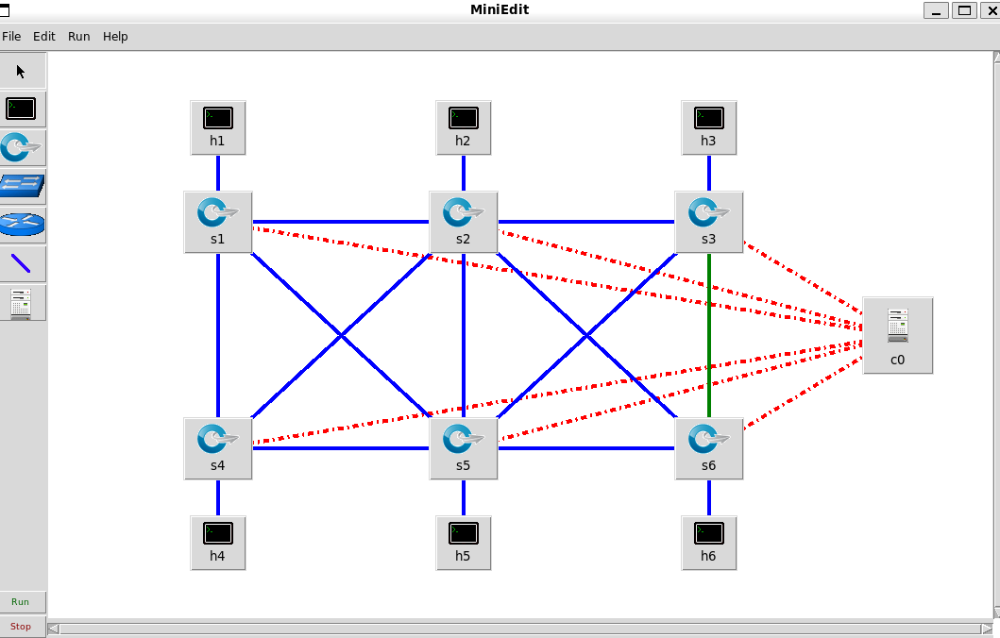
| Setting | Configuration |
|---|---|
| Host addresses | hi = 10.0.0.i/24, i = 1…6 |
| Host MAC addresses | 00:00:00:00:00:01 … 00:00:00:00:00:06 |
| Switch identification | s1…s6 use DPID 1…6, encoded as 16 hex digits |
| Control protocol | OpenFlow 1.3; c0 → 127.0.0.1:6653 |
| Bandwidth and host delay | All 17 links: 40 Mbps; each host link: 15 ms |
Host hi connects to si port 1. MiniEdit link properties provide TCLink bandwidth and delay settings; switch properties provide DPID and OpenFlow version. The saved file, actual Linux interfaces and Open vSwitch state were checked together, so the diagram alone is not the configuration evidence.
| Link | Delay ms and base cost | Link | Delay ms and base cost |
|---|---|---|---|
| s1–s2 | 5 | s2–s3 | 10 |
| s4–s5 | 15 | s5–s6 | 20 |
| s1–s4 | 8 | s2–s5 | 12 |
| s3–s6 | 7 | s1–s5 | 18 |
| s2–s4 | 6 | s2–s6 | 14 |
| s3–s5 | 9 | — | — |
Each switch link has the listed emulated delay and original routing weight. A physical link is represented by two directed graph edges, giving 22 directed switch edges. The original h1→h6 route is s1→s2→s6 with base weight 5 + 14 = 19. The alternative s1→s2→s3→s6 has base weight 5 + 10 + 7 = 22. These are routing weights; measured round-trip delay also includes both host links, the return path and scheduling.
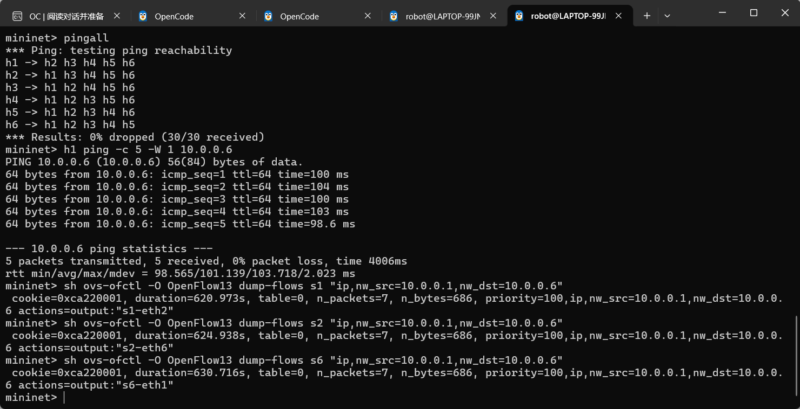
The baseline controller discovers switches and links using LLDP, uses fixed host attachments with proxy ARP to avoid mesh broadcast loops, and installs Dijkstra routes for all 30 distinct ordered host pairs. Pingall received 30/30; h1→h6 received 5/5 with average RTT 101.139 ms. Two separate 15-second 10 Mbps UDP checks each reported 10.0 Mbps and 0/12,759 lost datagrams. This baseline precedes the integrated anomaly trials [5].
Flow and port statistics are polled every second. Per-source packet rate is computed only at the source host attachment, avoiding counting the same packet once at every switch along its route. Counters are differenced using actual elapsed time. Counter resets are rebased, and multipart replies are assembled before processing.
rs(k) = ΔNs / Δt
Ts(k) = max(2000, 3Es(k-1))
Es(k) = 0.3rs(k) + 0.7Es(k-1)
After five valid warm-up samples, rs > Ts flags the source. The decision uses the previous EMA, and an anomalous or already blocked sample does not update the EMA. The 2000 pps floor prevents low or idle baselines from making ordinary 10 Mbps UDP traffic anomalous. ICMP echo replies are excluded from source anomaly detection so the responding victim is not blamed for the attacker’s requests. These are implementation choices extending the teacher EMA example [3].
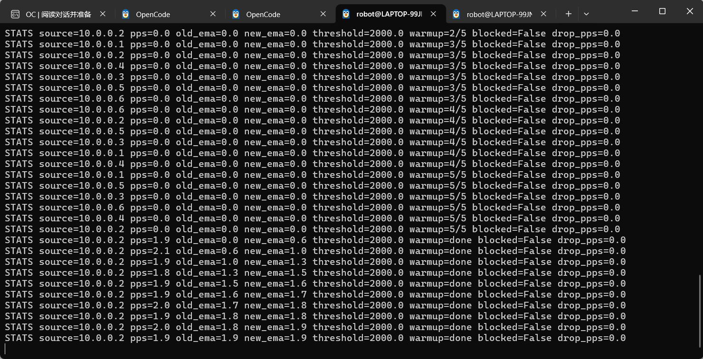
An 8-second h2→h6 ICMP flood was detected at 13,339.8 pps against a 2000 pps threshold. A priority-5000 IPv4 source drop rule was installed on all six switches. At s2 the rule had dropped 478,615 packets when inspected; subsequent h2 ping received 0/3 while h1 ping received 3/3. During the complete background observation, legitimate ping received 292/293, so this stage is not described as loss-free. Higher-priority source drops override the forwarding rules [6].
Each directed switch link receives an independent cost. Rij is derived from the destination switch port’s rx_bytes increase, representing traffic arriving across that directed link. Source-port tx_bytes is retained as a diagnostic. The assignment’s load-plus-anomaly form [1] is instantiated as follows; θ denotes the EMA coefficient, while the load weight is 5.
Uij(t) = clip(Rij(t) / 40,000,000, 0, 1)
Cij(t) = C0ij + 5Uij(t) + 60Aij(t)
Aij = 1 on directed edges of the detected attack path while its penalty is active; otherwise Aij = 0. A penalty lasts at least 8 seconds and is removed only after 5 seconds without ingress drop-counter activity. Stale statistics do not justify clearing a penalty. This prevents immediate cost recovery merely because blocking has stopped attack packets reaching the remote link. Source blocking remains installed after the cost recovers.
| s2→s6 condition | Observed cost |
|---|---|
| Idle | 14.000 |
| Legitimate 10 Mbps UDP | ≈15.24–15.34 |
| Anomaly penalty active | ≈75–76.637 |
| Penalty removed with legitimate load | 15.285878 |
| All data traffic stopped | ≈14.000 |
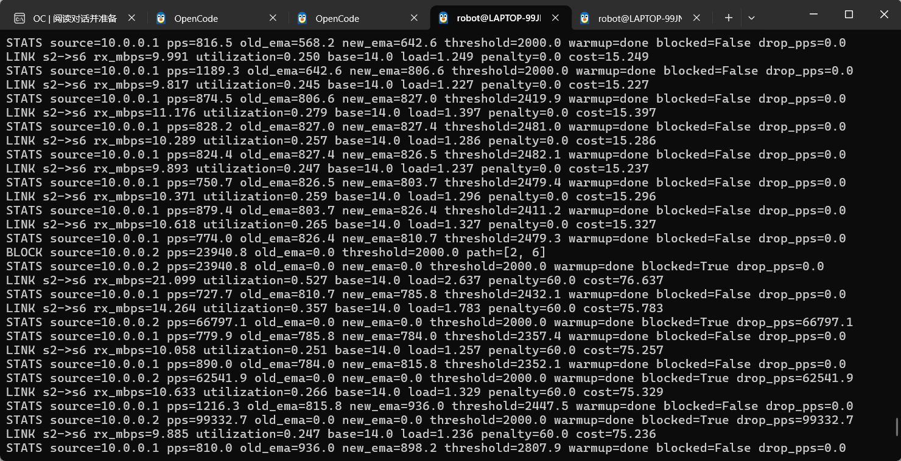
This isolated cost test deliberately retained static forwarding. Its 60-second UDP report was 9.99 Mbps with 44/51,024 lost datagrams, approximately 0.086%. It validates cost evolution, not rerouting. Task 4 subsequently enables route changes in the integrated controller [7].
The controller extends the supplied routing example [4] by applying Dijkstra with current directed costs. For each unblocked source pair, it changes route only when the new route is at least 1 cost unit cheaper and at least 3 seconds have passed since the last change. The improvement margin and hold time reduce small load-induced oscillations. The source-drop priority is 5000, above ingress forwarding priorities 100, 109 and 110 and tagged transit priority 200.
A route change uses an internal VLAN version. First, downstream rules for a new label are prepared and OpenFlow barriers are confirmed. Next, the untagged source-ingress rule is modified to attach the new label and use the new output port; another barrier confirms completion. The destination switch removes the tag. Old versions remain for 5 seconds before cookie-specific deletion. This ordering lets packets already in flight follow their previous route and preserves source counters and drop rules. The finite retention time is an engineering safeguard, not an unconditional zero-loss guarantee.
| Period | Activity |
|---|---|
| 0–12 s | Start continuous h1→h6 UDP at 10 Mbps and concurrent ping |
| 12–26 s | Start a 14-second hping3 ICMP flood for the selected case |
| 26–60 s | Stop the flood; observe cost and legitimate-route recovery |
| After 60 s | Probe legitimate connectivity and continued source blocking |
A uses h2→h3 on s2→s3; B uses h2→h6 on s2→s6; C uses h5→h6 on s5→s6. A fresh controller and topology state are used for each round because source blocking is persistent. UDP is iperf2 with 1470-byte datagrams and 1-second receiver reporting. Every second, actual flow actions, VLAN labels, output-port peers and packet counters are inspected to corroborate the installed h1→h6 route.
Case C requires an explicit injection condition: only the h5→h6 IPv4 test pair is pinned to direct s5→s6. Without this constraint its original shortest path is s5→s3→s6, cost 9 + 7 = 16, below the direct-link cost 20. Other host pairs remain dynamically routed and the original link weights are unchanged. Instructional confirmation of this test constraint remains necessary.
The flood is generated by h2→h3, targeting s2→s3. Detection installs the source block, and the target edge receives the anomaly penalty. Its idle, penalized and recovered costs follow 10 → approximately 70 → 10. Under ordinary legitimate load, a used link also carries its measured load term.
The sampled peak target-link arrival rate is 8.68 Mbps. The source is detected at 16,455.6 pps against a 2000 pps threshold. After ingress blocking and traffic drainage, the target-link arrival rate falls near idle while the penalty remains active until the quiet condition is met.
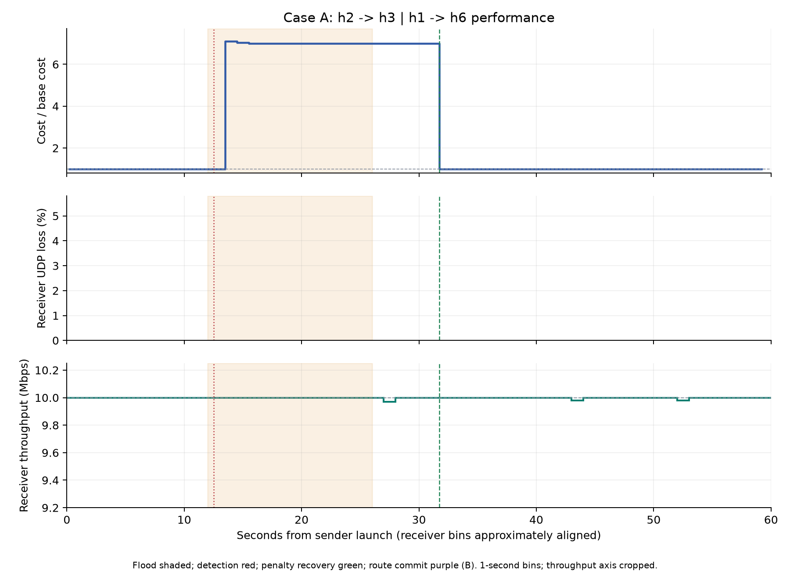
The legitimate path remains s1→s2→s6. Its original route does not traverse s2→s3, and the unaffected original route remains preferable. No reroute is required simply because an anomaly exists elsewhere.
The 60-second receiver report is 10 Mbps, with 0/51,024 lost UDP datagrams (0.0000%). The source-ingress drop count at recovery review is 905,435. Post-measurement checks received 3/3 legitimate ping replies and 0/2 replies from the blocked source. Source drops were retained across all sampled switches [9].
The flood is generated by h2→h6, targeting s2→s6. Detection installs the source block, and the target edge receives the anomaly penalty. Its idle, penalized and recovered costs follow 14 → approximately 75–77 → 14. Under ordinary legitimate load, a used link also carries its measured load term.
The sampled peak target-link arrival rate is 25.01 Mbps. The source is detected at 36,017.9 pps against a 2000 pps threshold. After ingress blocking and traffic drainage, the target-link arrival rate falls near idle while the penalty remains active until the quiet condition is met.
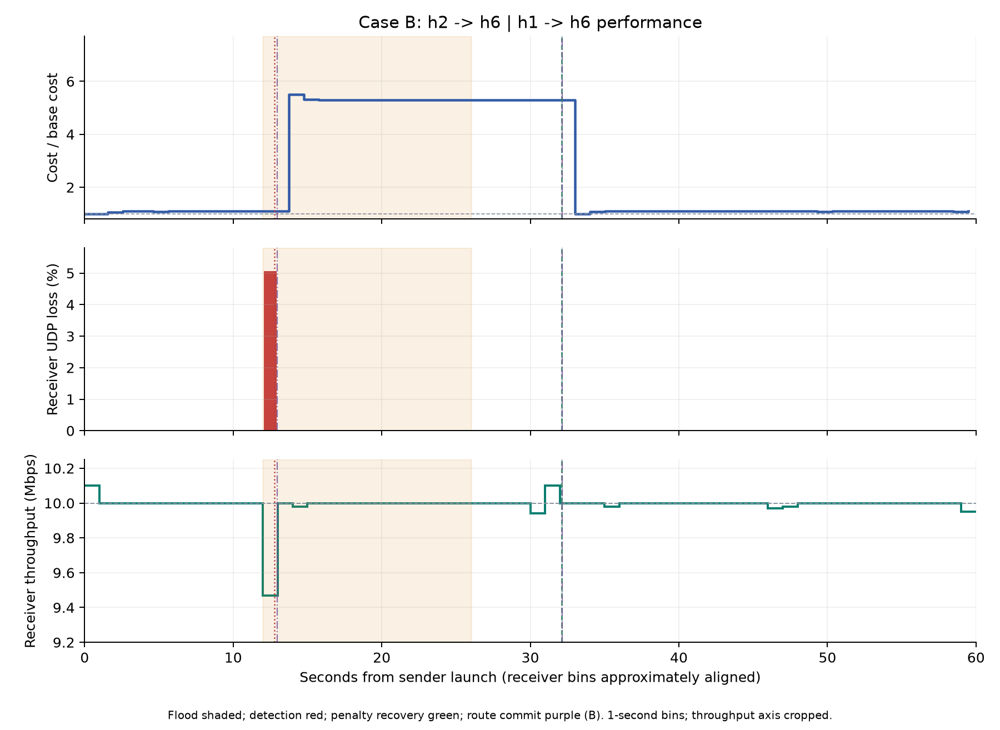
The legitimate path changes s1→s2→s6 → s1→s2→s3→s6 → s1→s2→s6. The anomaly penalty makes the original route expensive, and the alternative avoids s2→s6. Recovery removes the penalty and returns traffic to the cheaper original route.
The 60-second receiver report is 9.99 Mbps, with 43/51,024 lost UDP datagrams (0.0843%). The source-ingress drop count at recovery review is 888,103. Post-measurement checks received 3/3 legitimate ping replies and 0/2 replies from the blocked source. Source drops were retained across all sampled switches [9]. For B, the lowest one-second throughput was 9.47 Mbps and peak one-second loss was 5.0708%.
The flood is generated by h5→h6, targeting s5→s6. Detection installs the source block, and the target edge receives the anomaly penalty. Its idle, penalized and recovered costs follow 20 → approximately 80 → 20. Under ordinary legitimate load, a used link also carries its measured load term.
The sampled peak target-link arrival rate is 9.17 Mbps. The source is detected at 25,340.8 pps against a 2000 pps threshold. After ingress blocking and traffic drainage, the target-link arrival rate falls near idle while the penalty remains active until the quiet condition is met.
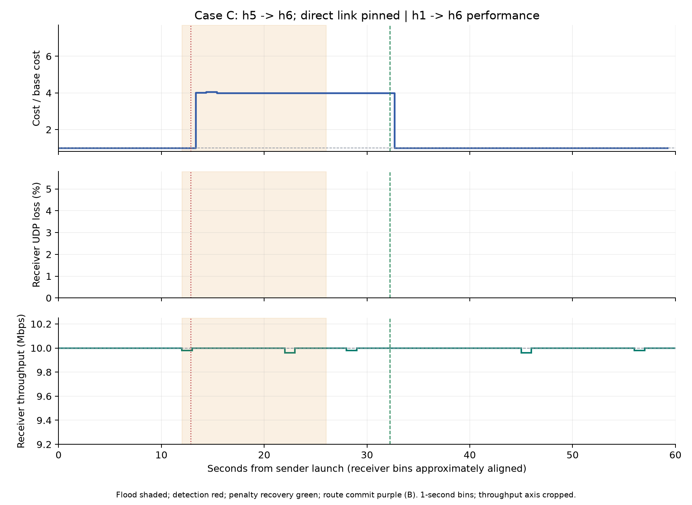
The legitimate path remains s1→s2→s6 because it does not use s5→s6. The anomalous source is h5, so its blocking does not match h1 traffic. This is a prescribed-link injection test under the explicit pair-pinning condition described above.
The 60-second receiver report is 10 Mbps, with 0/51,024 lost UDP datagrams (0.0000%). The source-ingress drop count at recovery review is 898,283. Post-measurement checks received 3/3 legitimate ping replies and 0/2 replies from the blocked source. Source drops were retained across all sampled switches [9].
Normalized link cost is Cij(t)/C0ij. The denominators are 10 for A, 14 for B and 20 for C. A value of 1 means the base routing cost, not 100% utilization. A common absolute anomaly penalty therefore creates different normalized heights across cases; the heights do not measure relative attack strength.
UDP loss (%) = 100 × lost datagrams / total datagrams
Throughput is the receiver’s iperf Mbps report, not the configured sender rate. Curves contain the original one-second windows without smoothing. Whole-run loss uses the final server report relayed to the client; one-second receiver bins can have slightly different end boundaries. Throughput values retain their input display precision. Stable-window throughput below is a duration-weighted mean of the reported receiver intervals.
| Trial | Whole Mbps | UDP lost / total | Loss % |
|---|---|---|---|
| A | 10.0 | 0 / 51,024 | 0.0000 |
| B1 | 9.99 | 43 / 51,024 | 0.0843 |
| B2 | 9.99 | 78 / 51,024 | 0.1529 |
| B3 | 10.0 | 22 / 51,024 | 0.0431 |
| C | 10.0 | 0 / 51,024 | 0.0000 |
| Trial | Before 4–10 s | During 15–24 s | After 40–55 s |
|---|---|---|---|
| A | 10.000 | 10.000 | 9.997 |
| B1 | 10.000 | 10.000 | 9.997 |
| B2 | 10.000 | 10.000 | 10.000 |
| B3 | 10.000 | 10.000 | 10.000 |
| C | 10.000 | 9.996 | 9.997 |
Table values in the second table are Mbps; every listed stable window has 0% observed UDP loss. These windows deliberately exclude the onset transition near 12–14 seconds. The stable-window zeros do not erase the transient loss shown by the complete time series.
For A, C, B2 and B3, the sender launch timestamp supplies the time origin. B1 uses an estimate from sampling metadata because its original start metadata was unavailable. Receiver bins start at the first received datagram. Controller events and receiver intervals are aligned at approximately one-second resolution, not synchronized at millisecond precision. The end of the shaded flood period is the scheduled timeout, rather than an independently timestamped process exit.
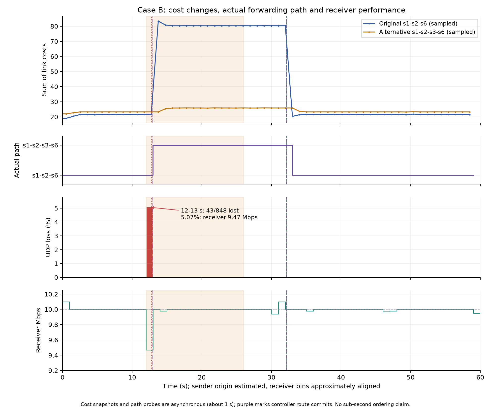
In the normal stable period, the original path cost is approximately 21.57 and the alternative 23.28. With the anomaly penalty active, the original reaches approximately 80.35 while the alternative is approximately 25.80; switching is justified by the lower current path cost. After recovery, approximately 21.58 versus 23.29 again favours the original path. These are dynamic path costs including load. The base costs remain 19 and 22.
The path strip is supported by actual ingress labels and downstream output rules, interface peers and increasing packet counters. It is not inferred solely from a controller ROUTE message. Cost snapshots and flow inspections are asynchronous, so small visual offsets between a cost change, an event marker and a path sample are not used to assert sub-second causal ordering.
Three separate B trials used the same nominal configuration. All are shown, including the first and least favourable observations. This repeat study supplements the assignment’s required three anomaly locations; it does not replace cases A and C.
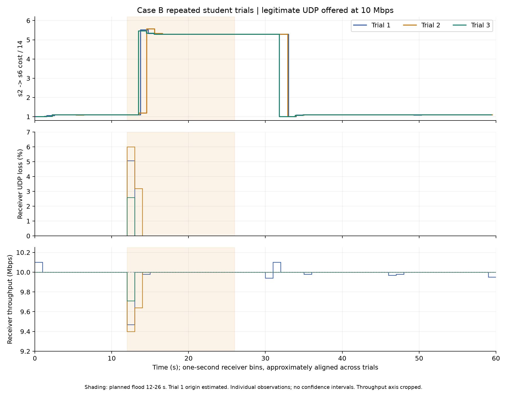
| Trial | Peak 1 s loss % | Minimum 1 s Mbps | Ingress drops |
|---|---|---|---|
| B1 | 5.0708 | 9.47 | 888,103 |
| B2 | 6.0000 | 9.40 | 825,016 |
| B3 | 2.5943 | 9.71 | 901,466 |
All three trials rerouted to s1→s2→s3→s6 and later returned to s1→s2→s6. Their whole-run loss mean is 0.0934%, sample standard deviation 0.0554 percentage points, and range 0.0431%–0.1529%. Pooled loss is 143/153,072 datagrams, also 0.0934%. These are descriptive statistics for three observations, without a confidence interval or long-term reliability claim.
B1 lost 43/848 datagrams in its 12–13 second interval. B2 lost 51/850 in 12–13 seconds and 27/847 in 13–14 seconds. B3 lost 22/848 in 12–13 seconds. Outside these intervals, no UDP loss was observed in these three B receiver time series. Every one-second interval had positive throughput, and the stable anomaly windows returned to approximately 10 Mbps.
The flood command does not impose a fixed packets-per-second rate. CPU scheduling, traffic generation, queue state and the polling phase may differ across runs. The evidence locates the disruption near anomaly onset, but does not isolate a single cause for every lost packet. No no-rerouting control with identical blocking was measured, so an independent numerical benefit of rerouting over blocking alone cannot be estimated.
Post-measurement ping succeeded for h1→h6 (3/3) and failed for the blocked source (0/2) in every integrated trial. All sampled switches retained their source-drop entries during rerouting, old-version cleanup and recovery. Continued legitimate reception and blocked-source probes together support selective isolation. They do not mean that no attack packets passed before the detection decision.
Continuous ICMP logs reported 121 sent and 120 received in each integrated trial. The missing final sequence is consistent with an in-flight packet at cleanup, but packet capture did not establish its cause. This ICMP statistic is retained separately from the UDP loss curves. The report therefore does not assert zero ICMP loss.
After the flood stops and the quiet period expires, the anomaly term disappears and the legitimate route may return. The source remains blocked until a fresh experiment restarts the state. Any new packet from an already blocked source reactivates a short penalty on its last recorded attack path. The script’s two blocked-source pings after 60 seconds therefore can cause an additional route excursion; these events are excluded from the formal 0–60 second performance window.
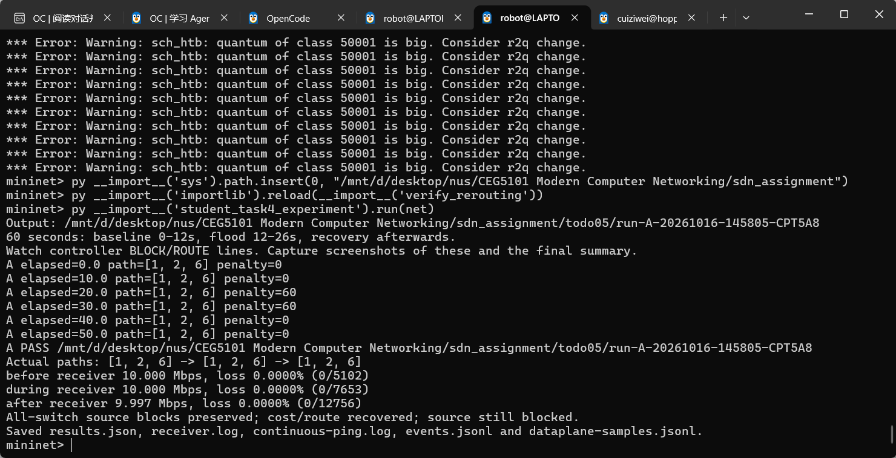
The PASS outputs are supporting checks, not substitutes for interpretation. In both cases the affected edge lies outside the h1→h6 original route. Remaining on that route is therefore compatible with dynamic shortest-path routing. The cost and receiver curves on earlier pages provide the time-resolved evidence.
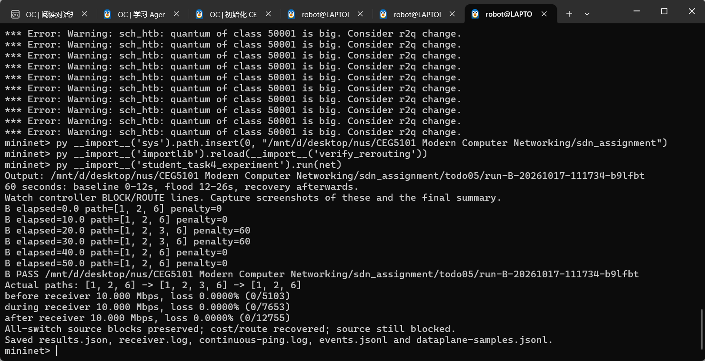
s2 flow inspection after the 8-second h2 flood
cookie=0xca230002 priority=5000
ip,nw_src=10.0.0.2 actions=drop
n_packets=478615 n_bytes=20101830
h2 → h6 ping: 3 sent, 0 received
h1 → h6 ping: 3 sent, 3 received
This is a typeset excerpt of the student-pasted terminal record, not a recreated screenshot [6]. The drop entry has no forwarding action. The lower-priority h2→h6 forwarding entry remains present, but the higher-priority source rule matches first. A rule’s presence and increasing drop counter, combined with failed blocked-source ping, demonstrate enforcement.
B1 originally printed FAIL because its checker wrongly required a local ryu.log while the controller ran in an external student terminal. The original FAIL record was retained. A separate offline review verified the saved events, flow snapshots, receiver data and probes; B2 and B3 subsequently printed PASS directly. No earlier measurement was overwritten by a later successful trial.
The tested controller meets the functional objective of combining source monitoring, EMA anomaly detection, IPv4 source blocking, load-aware cost updates and conditional legitimate rerouting. A and C isolate anomalies without moving an unaffected legitimate flow. In B, all three measurements show a lower-cost alternative selected during the anomaly and recovery to the original route afterwards. Stable legitimate UDP reception remains approximately 10 Mbps, with brief onset loss in B.
The evaluation uses one topology and a 10 Mbps legitimate offered load, not a 40 Mbps saturation benchmark. A and C each have one measured trial; only B has three. The settings are justified operationally rather than optimized by a parameter sweep. Physical link failures were not evaluated: the current fixed-topology implementation stops route transactions if a switch or link disappears after readiness. Case C’s constrained test pair needs instructional confirmation, and post-block reactivation assumes the recorded attack path remains relevant.
OpenAI ChatGPT and Codex were used to explain SDN concepts, assist environment configuration and troubleshooting, develop and revise controller and experiment scripts, perform automated checks, process saved experimental data, generate plots, and draft and format this report. The reported measurements and screenshots come from student-operated experiments; separate assistant validation runs are not counted as student repetitions. The submitting author or authors are responsible for understanding, checking and accepting the content and quality of the submitted work. This disclosure follows the supplied academic integrity guidance [8].
[1] CEG5101, CA2 Laboratory Assignment, Anomaly aware Routing and Blocking Controller, AY 2026/27 Semester 1, pp. 1–4.
[2] Supplied ceg_mesh_topo.py, teacher lab package.
[3] Supplied anomaly_detection.py, teacher lab package.
[4] Supplied resilient_controller.py, teacher lab package.
[5] Student baseline evidence, todo01 and todo02, 11 and 16 October 2026.
[6] Student anomaly detection evidence, todo03, 16 October 2026.
[7] Student dynamic-cost evidence, todo04, 16 October 2026.
[8] Supplied academic integrity guidance, 学术规范.txt.
[9] Student integrated trials in todo05 and final Task 5 analyses in todo06/task5-final-20261017, 16–17 October 2026.
The implementation uses Ubuntu 22.04 under WSL2, Mininet 2.3.0 and Open vSwitch 2.17.12. MiniEdit uses system Python 3.10.12. The controller runs in a separate environment with Python 3.8.20, Ryu 4.34, eventlet 0.30.2 and NetworkX 2.6.3. Teacher source files are retained unchanged. baseline_controller.py, anomaly_controller.py, dynamic_cost_controller.py and rerouting_controller.py implement the successive stages.
Ubuntu terminal A: sudo miniedit
Open /home/robot/CEG5101/todo01/ca2-mesh-my.mn
Ubuntu terminal B, from the assignment workspace:
bash run_rerouting.sh A # then repeat with B and C
In MiniEdit: Run, wait for REROUTING READY and warm-up
In mininet> (insert the workspace into sys.path first):
py __import__('student_task4_experiment').run(net)
The Python module call runs the timed traffic and observation procedure in the current MiniEdit network object net. It is not the Ryu controller entry point. Between cases, exit the Mininet CLI, press Stop, stop the previous Ryu process and restart with the next scenario. The formal experiment records a complete 60-second legitimate stream, a 14-second flood beginning around second 12, per-second flow/port snapshots and receiver reports.
| Trial | Saved run directory under todo05 |
|---|---|
| A | run-A-20261016-145805-CPT5A8 |
| B1 | run-B-20261016-144402-YuFNPf |
| B2 | run-B-20261017-105957-DfB6RZ |
| B3 | run-B-20261017-111734-b9lfbt |
| C | run-C-20261016-153103-Ho9Y7P |
Each integrated run stores sender.log, receiver.log, continuous-ping.log, dataplane-samples.jsonl, initial/recovered evidence and a separate reviewed result. Frozen event snapshots and frozen B comparison inputs prevent later controller logging from changing the analysis source. Figures are copied byte-for-byte into this report’s assets folder with SHA256 provenance. The final Task 5 folder also contains per-second CSVs, original SVGs, summary JSON and validation records.
Requirement coverage: topology and configuration → Section 1; source rate, EMA and blocking → Section 2; load and anomaly costs → Section 3; all three prescribed links, path choice and recovery → Section 4; normalized cost, loss and throughput curves plus phase interpretation → Section 5. No new traffic experiment was run while assembling this report.